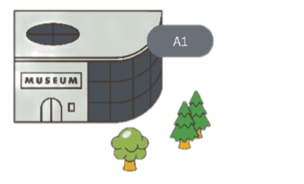
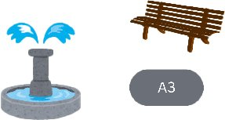
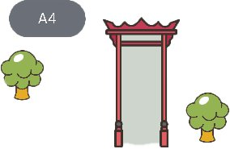
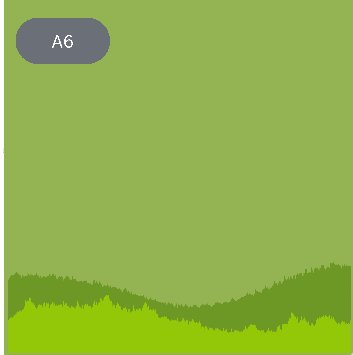
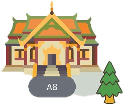
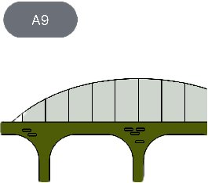
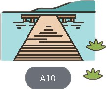

planetarium
สถานที่เรียนรู้ดาราศาสตร์ที่น่าสนใจ
Museum Siam
พิพิธภัณฑ์ที่นำเสนอเรื่องราวของชาติไทย
Benchakitti Forest Park
สวนสาธารณะขนาดใหญ่สำหรับการพักผ่อนและออกกำลังกาย
Sao Ching Cha
โบราณสถานสำคัญที่ตั้งอยู่ใจกลางกรุงเทพ
Phu khao thong
วัดที่มีบรรยากาศสงบและวิวทิวทัศน์ที่สวยงาม
Sanam Luang
สถานที่สำคัญของไทยในด้านประวัติศาสตร์และวัฒนธรรม
Bangkok Art and Culture Centre
ศูนย์กลางศิลปะร่วมสมัยที่น่าสนใจ
วัดพระแก้ว
วัดที่สำคัญที่สุดของไทย
Phra Phutthayotfa
สะพานที่สวยงามและมีวิวที่น่าประทับใจ
Tha Maharaj
สถานที่นั่งเรือและท่องเที่ยว